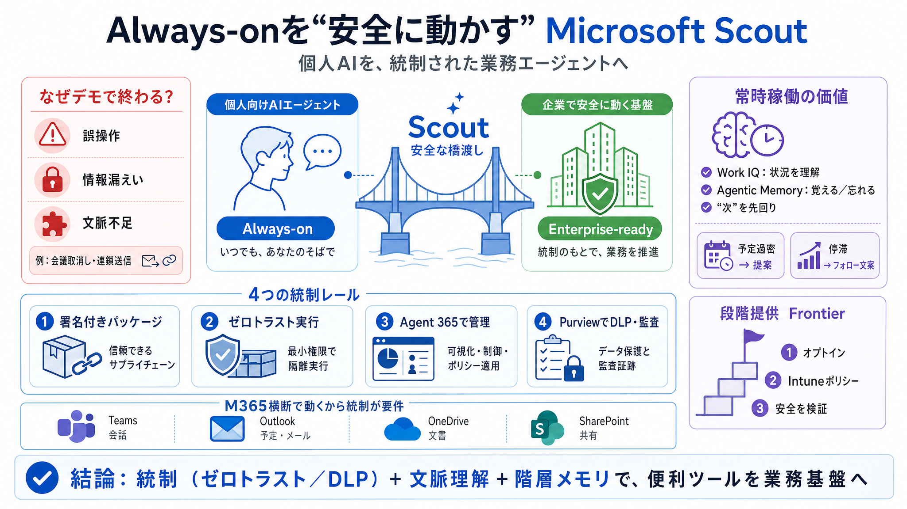

Zero Trust deployment approach with Microsoft Intune - Microsoft Intune | Microsoft Learn
This layer implements enterprise-level Zero Trust identity and device access policies by requiring devices to be healthy…

Always-onを“安全に動かす”
個人向けAIエージェントを、企業で使える形にするための設計・統制の考え方を圧縮して整理します。
デモで終わる理由
エージェントは“次に起きる問題”に先回りできますが、誤操作・情報漏えいが業務リスクになります。
橋渡しの物語
個人プロジェクト（例：Lobster／OpenClaw系）の面白さを、継続価値のある業務代行へ拡張し、企業向け統合へ結晶させます。
“賢さ”を統制へ
オープンソースの“賢さ”をそのまま持ち込むのではなく、ゼロトラストとガバナンスで安全に統合します。
統治の要点
企業で止めないために、実装と運用を“統制のレール”に乗せます。
自律性の条件
常時稼働は“質問への回答”ではなく、“状況を理解して動く”ことが価値になります。
常時稼働の動き
単なる通知ではなく、過密検知や停滞のフォローアップ文案などを先回りで作成します。
Cross-App運用
Teams/Outlook/OneDrive/SharePointなど複数領域で動くからこそ、DLPや監査が“要件”になります。
“安全と品質”の文化
エージェントは誤作動が業務に直結するため、PRレビュー速度や一貫性チェックを人間速度で回します。
段階提供（Frontier）
Frontier配下で実験リリースし、Intune設定やオプトイン等で条件付きに利用可能にします。
“方向性”の強みと限界
統治の言葉が具体的で説得力がある一方、事故時の封じ込め手順や監査粒度など運用エビデンスは読み取れません。
結論
Scoutは「個人の便利ツール」を「業務を前に進める基盤」へ寄せる設計原則を示し、リスクを抑えつつ可能性を残します。
This layer implements enterprise-level Zero Trust identity and device access policies by requiring devices to be healthy…
Microsoft Security Microsoft Defender Microsoft Entra Microsoft Intune Microsoft Purview Microsoft Security Copilo…
# Zero Trust deployment plan with Microsoft 365. This article provides a deployment plan for building **Zero Trust** sec…
Zero Trust is a proactive, integrated approach to security that requires knowing what business assets and processes are …
Securing the identity and access of both humans and machines has long been a pillar of enterprise defense. As the advanc…